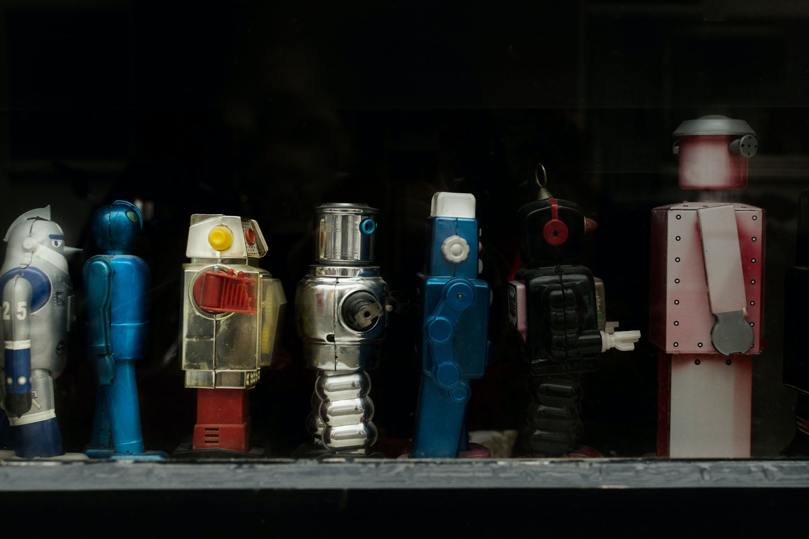

로봇(문화어: 로보트, 영어: Robot)은 인간과 유사한 모습과 기능을 가진 기계 또는 한 개의 컴퓨터 프로그램으로 작동할 수 있고,
자동적으로 복잡한 일련의 작업(Comlex Series of A,ctions)을 수행하는 기계적 장치를 말합니다.
제조공장에서 조립, 용접, 핸들링 등을 수행하는
자동화된 로봇을 산업용 로봇이라 하고,
환경을 인식하고 스스로 판단하는 기능을 가진 로봇을 '지능형 로봇'이라 합니다.
사람과 닮은 모습을 한 로봇을 '안드로이드'라 부르고
형태가 있으며, 자신이 생각할 수 있는 능력을 가진 기계라고도 합니다.
그리고 인공의 동력을 사용하는 로봇은 사람 대신, 또는 사람과 함께 일을 하기도 합니다.
통상 로봇은 제작자가 계획한 일을 하도록 설계됩니다.
로봇'이란 용어는 체코슬로바키아의 극작가 카렐 차페크(Carel Čapek)가
1920년에 발표한 희곡 "R.U.R"에 쓴 것이 퍼져 일반적으로 사용되게 되었습니다.
또한 로봇의 어원은 체코어로 "노동"을 의미하는 Robota입니다.
